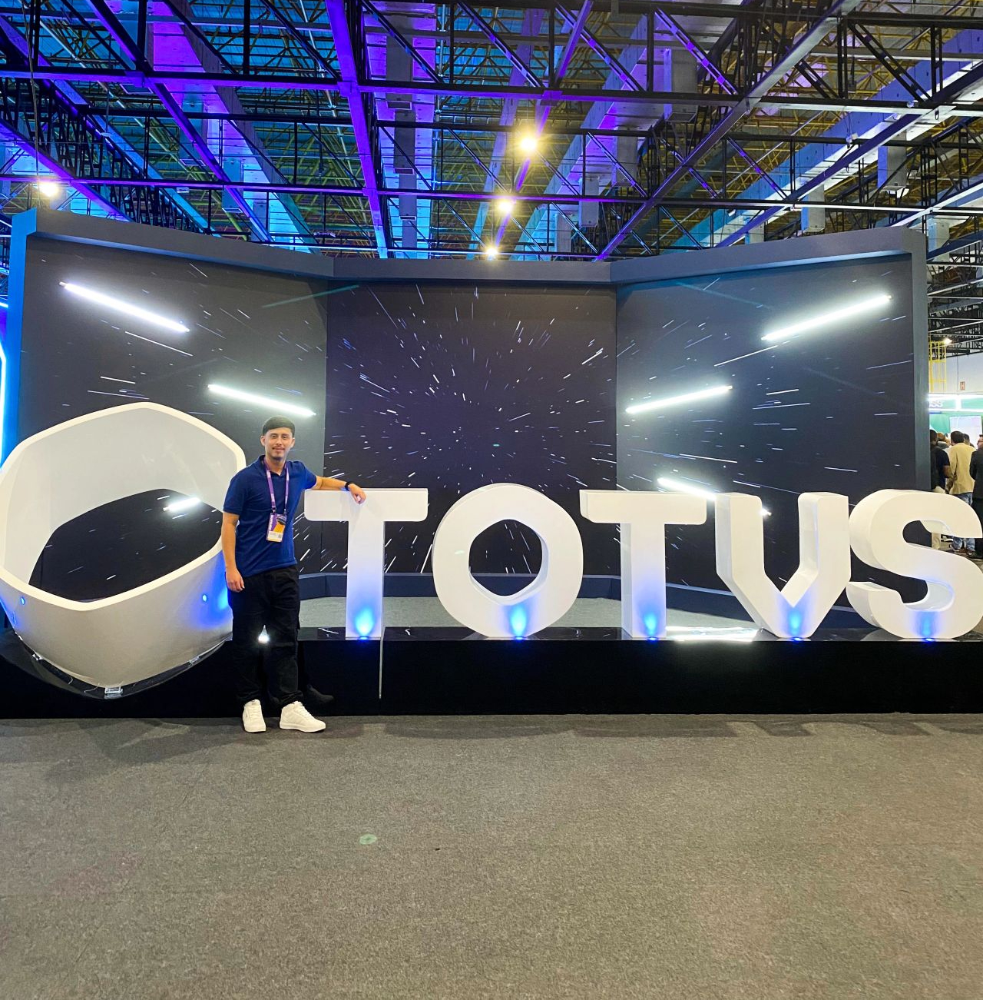
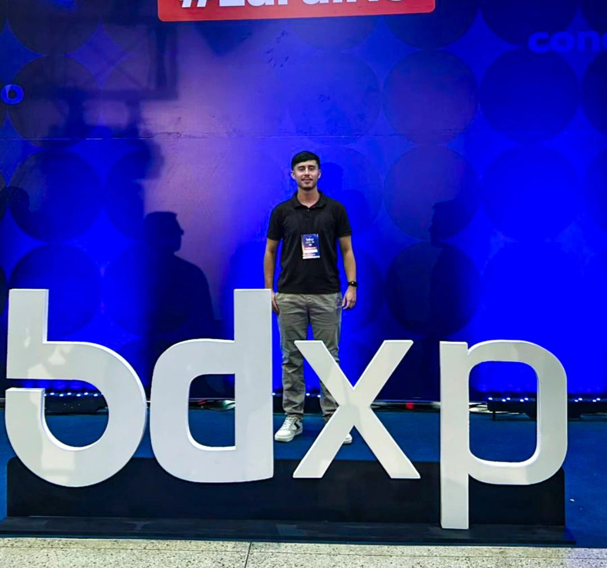
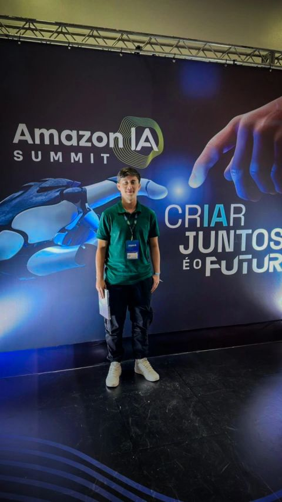
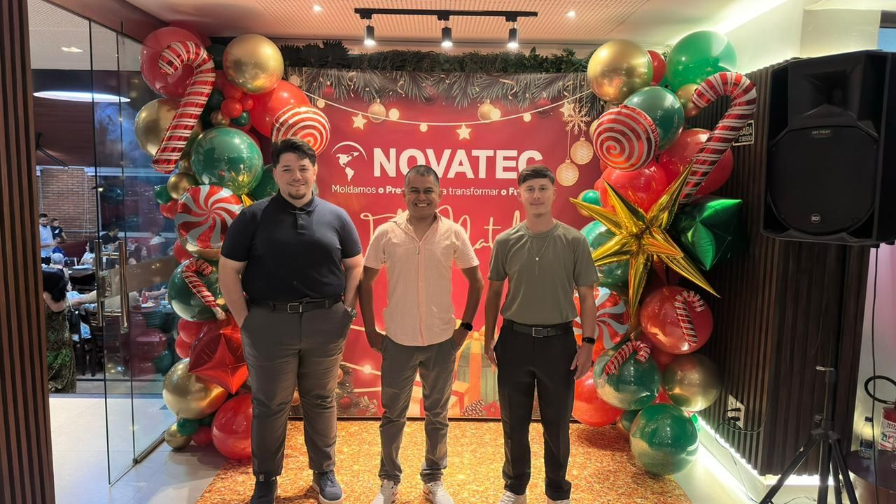

Francisco Nicolas
Souza de Brito
Analista de TI atuando com | IT Analyst working with |
Analista de TI com forte conhecimento técnico e perfil híbrido. Uno a estruturação de infraestrutura e redes com o desenvolvimento de aplicações, criando soluções que impactam a operação industrial e a gestão de negócios. IT Analyst with strong technical knowledge and a hybrid profile. I merge network and infrastructure architecture with software development, creating solutions that directly impact industrial operations and business management.
Sobre MimAbout Me
Sou um Analista de TI com perfil generalista e visão estratégica, atuando desde a estruturação de ambientes até a geração de valor para o negócio por meio da tecnologia.
Na Novatec Indústria de Plásticos, liderei a evolução da TI saindo de um cenário básico (apenas um roteador doméstico) para uma infraestrutura corporativa estruturada, segura e escalável com MikroTik, VLANs e nuvem (AWS).
Paralelamente, foco na melhoria contínua de processos desenvolvendo soluções internas em Laravel/Vue.js. Meu objetivo é posicionar a TI como área estratégica, entregando dados cruciais para a diretoria, reduzindo falhas e otimizando diretamente o chão de fábrica.
Destaques Operacionais
I am an IT Analyst with a generalist profile and strategic vision, working from building environments from scratch to generating business value through technology.
At Novatec Indústria de Plásticos, I led the IT evolution from a basic scenario (just a home router) to a structured, secure, and scalable corporate infrastructure using MikroTik, VLANs, and cloud (AWS).
Simultaneously, I focus on continuous process improvement by developing internal solutions in Laravel/Vue.js. My goal is to position IT as a strategic area, delivering crucial data to the board, reducing failures, and optimizing the shop floor directly.
Operational Highlights
Infra & Redes
Desenvolvimento
Gestão & Industrial
Infra & Networks
Development
Management & Industry
ExperiênciaExperience
Uma evolução contínua, da estruturação base do suporte técnico à análise de dados e viabilização de estratégias da diretoria. A continuous evolution, from building technical support bases to data analysis and enabling board-level strategies.
Novatec Indústria de Plásticos
Analista de TI (Promovido em Set/2025)
Liderei a evolução completa da TI, transformando um cenário inicial básico em uma infraestrutura corporativa estruturada, segura e escalável.
Distribuidora Ferraz
Auxiliar de TI
Suporte técnico de N2/N3 para um complexo de 5 lojas, garantindo o funcionamento do parque tecnológico e sistemas gerenciais.
Centro de Educação Tecnológica do Amazonas (CETAM)
Assistente Administrativo (Estágio)
Atuação no setor público com foco em organização, elaboração e envio de documentos, além de atendimento ao público.
Gráfica Rio
Designer Gráfico (Estágio)
Atuação focada na criação visual e processos de impressão, desenvolvendo artes para camisas e materiais gráficos.
Novatec Indústria de Plásticos
IT Analyst (Promoted Sep/2025)
Led the complete IT evolution, transforming a basic initial scenario into a structured, secure, and scalable corporate infrastructure.
Distribuidora Ferraz
IT Assistant
L2/L3 technical support for a 5-store complex, ensuring the reliability of the technological park and management systems.
CETAM (Center for Technological Education)
Administrative Assistant (Internship)
Public sector role focused on organizing, drafting, and sending documents, alongside customer service.
Gráfica Rio
Graphic Designer (Internship)
Focused on visual creation and printing processes, developing artwork for shirts and graphic materials.
Formação e CertificaçõesEducation & Certifications
A base teórica de gestão e as certificações de peso que sustentam a prática na infraestrutura. The theoretical management base and heavy-weight certifications that support my infrastructure practices.
Previsão: Junho / 2026Expected: June / 2026
Gestão da Tecnologia da InformaçãoIT Management
Universidade Estácio de Sá
Início: 2026Start: 2026
Gestão de Produção IndustrialIndustrial Production Management
Foco na otimização da operação de fábricaFocus on factory operation optimization
Licenças e Certificações PrincipaisMain Licenses & Certifications
FortiGate 7.6 Operator
FortinetLean Manufacturing para Indústria 4.0
Instituto ConecthusMikrotik Fundamental
ENTELCO TelecomAdministrador de Banco de DadosDatabase Administrator
IFRSProjetos: Elaboração e GestãoProjects: Elaboration & Management
IFRSFormação Power BIPower BI Training
IFPKProjetos em DestaqueFeatured Projects
Soluções arquitetadas para otimizar processos, reduzir custos e integrar o chão de fábrica à alta diretoria. Solutions architected to optimize processes, reduce costs, and integrate the shop floor with the board of directors.
Eventos & ImersãoEvents & Immersion
Conhecimento, Inovação e Conexão.
Acredito que a evolução profissional acontece tanto nas imersões tecnológicas quanto no fortalecimento dos laços com a equipe. Aqui estão alguns registros da minha jornada.
Knowledge, Innovation, and Connection.
I believe professional evolution happens through both technological immersion and strengthening team bonds. Here are some records of my journey.

Junho/2025 • São Paulo, SP
Universo TOTVS
Representando a Novatec em uma imersão profunda sobre inovação em ERPs, aplicação de IA e o futuro da indústria.
Representing Novatec in a deep dive on ERP innovation, AI application, and the future of the industry.

Julho/2025 • Manaus, AM
BDXP - Tech & IA
Acompanhando como AWS, NVIDIA e Databricks estão moldando a IA no mundo real, direto do ecossistema amazônico.
Watching closely how AWS, NVIDIA, and Databricks are shaping real-world AI, straight from the Amazon ecosystem.

Dezembro/2025 • Manaus, AM
Amazon IA Summit
Da infraestrutura à estratégia. Insights valiosos sobre como transformar tecnologia bruta em eficiência operacional.
From infrastructure to strategy. Valuable insights on how to transform raw technology into operational efficiency.

Dezembro/2025 • Novatec
Liderança & EquipeLeadership & Team
"A TI não acompanha o ritmo, ela impulsiona o negócio". Celebrando os resultados e o crescimento coletivo do time.
"IT doesn't just keep up, it drives the business". Celebrating our team's collective growth and yearly results.
Vamos conversar?Let's talk?
Aberto a trocar ideias sobre infraestrutura, desenvolvimento ou novas oportunidades. Open to exchanging ideas about infrastructure, development, or new tech opportunities.